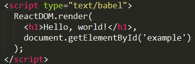

React
- HTML模板
使用 React 的网页源码，结构大致如下。
<!DOCTYPE html><html><head><script src="../build/react.js"></script><script src="../build/react-dom.js"></script><script src="../build/browser.min.js"></script></head><body><div id="example"></div><script type="text/babel">// ** Our code goes here! **</script></body></html>
- React独有的JSX语法，跟JavaScript不兼容，凡是使用JSX的地方，都要加上type="text/babel"
- 三个库react.js、react-dom.js、Browser.js，必须首先加载。react.js 是 React 的核心库，react-dom.js 是提供与 DOM 相关的功能，Browser.js 的作用是将 JSX 语法转为 JavaScript 语法，这一步很消耗时间，实际上线的时候，应该将它放到服务器完成。
- ReactDOM.render()
这是React的最基本方法，用于将模板转为HTML语言，并插入指定的DOM节点。

在浏览器中DOM节点显示如下：

- JSX语法
允许HTML与JavaScript的混写。语法规则：遇到 HTML 标签（以 < 开头），就用 HTML 规则解析；遇到代码块（以 { 开头），就用 JavaScript 规则解析。

浏览器中显示如下：

JSX 允许直接在模板插入 JavaScript 变量。如果这个变量是一个数组，则会展开这个数组的所有成员

浏览器中显示：

- 组件
React 允许将代码封装成组件（component），然后像插入普通 HTML 标签一样，在网页中插入这个组件。React.createClass 方法就用于生成一个组件类